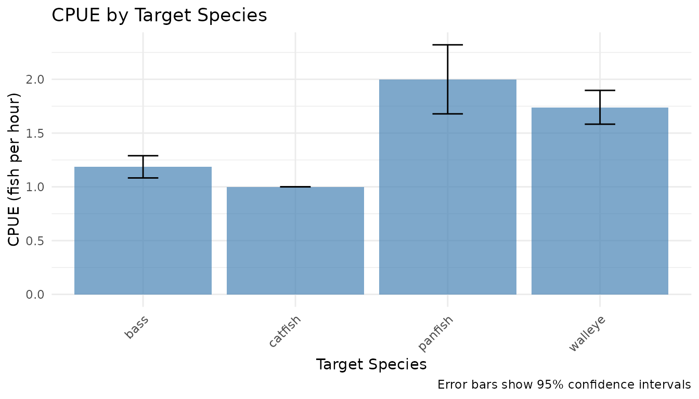

Introduction
This vignette demonstrates how to estimate Catch Per Unit Effort
(CPUE) and total catch/harvest using tidycreel’s survey-first approach.
All estimators build on the survey package for proper
design-based inference.
Key Concepts
CPUE Estimation Modes
tidycreel provides two CPUE estimation modes:
-
Ratio-of-means (default): Total catch ÷ total
effort
- Preferred for incomplete trips or when trip completion varies
- Uses
survey::svyratio()for proper variance - More robust to outliers
-
Mean-of-ratios: Mean of (catch ÷ effort) per angler
- Appropriate for complete trips only
- Uses
survey::svymean()on pre-computed ratios - Can be sensitive to zero-effort trips
Catch/Harvest Estimation
Total catch or harvest uses survey::svytotal() to expand
interview data to population totals with proper variance estimation.
Loading Example Data
# Load toy datasets
interviews <- readr::read_csv(
system.file("extdata/toy_interviews.csv", package = "tidycreel"),
show_col_types = FALSE
)
calendar <- readr::read_csv(
system.file("extdata/toy_calendar.csv", package = "tidycreel"),
show_col_types = FALSE
)
# Preview interview data
head(interviews)
#> # A tibble: 6 × 17
#> interview_id date time_start time_end location mode
#> <chr> <date> <dttm> <dttm> <chr> <chr>
#> 1 INT001 2024-01-01 2024-01-01 08:30:00 2024-01-01 08:45:00 Lake_A boat
#> 2 INT001B 2024-01-01 2024-01-01 08:30:00 2024-01-01 08:45:00 Lake_B boat
#> 3 INT002 2024-01-01 2024-01-01 09:15:00 2024-01-01 09:30:00 Lake_A bank
#> 4 INT002B 2024-01-01 2024-01-01 09:15:00 2024-01-01 09:30:00 Lake_B bank
#> 5 INT003 2024-01-01 2024-01-01 10:00:00 2024-01-01 10:20:00 Lake_A boat
#> 6 INT003B 2024-01-01 2024-01-01 10:00:00 2024-01-01 10:20:00 Lake_B boat
#> # ℹ 11 more variables: shift_block <chr>, day_type <chr>, party_size <dbl>,
#> # hours_fished <dbl>, target_species <chr>, catch_total <dbl>,
#> # catch_kept <dbl>, catch_released <dbl>, weight_total <dbl>,
#> # trip_complete <lgl>, effort_expansion <dbl>Creating Survey Designs
Day-Level Design
First, create a day-level design from the sampling calendar:
# Create day-level survey design
svy_day <- as_day_svydesign(
calendar,
day_id = "date",
strata_vars = c("day_type", "month")
)
# Check the design
summary(weights(svy_day))
#> Min. 1st Qu. Median Mean 3rd Qu. Max.
#> 1.027 1.027 1.064 1.052 1.064 1.064Interview-Level Design
For CPUE and catch estimation, we need an interview-level design. Join day-level weights to interviews:
# Join day weights to interviews
interviews_weighted <- interviews %>%
left_join(
svy_day$variables %>% select(date, .w),
by = "date"
)
# Create interview-level survey design
svy_interview <- survey::svydesign(
ids = ~1,
weights = ~.w,
data = interviews_weighted
)
# Check the design
summary(weights(svy_interview))
#> Min. 1st Qu. Median Mean 3rd Qu. Max.
#> 1.027 1.064 1.064 1.055 1.064 1.064CPUE Estimation
Ratio-of-Means (Default)
The ratio-of-means approach is preferred for most creel surveys:
# CPUE by target species (ratio-of-means)
cpue_species <- est_cpue(
svy_interview,
by = c("target_species"),
response = "catch_total",
effort = "hours_fished",
mode = "ratio_of_means"
)
cpue_species
#> # A tibble: 4 × 8
#> target_species estimate se ci_low ci_high n method diagnostics
#> <chr> <dbl> <dbl> <dbl> <dbl> <int> <chr> <list>
#> 1 bass 1.19 0.0527 1.08 1.29 60 cpue_ratio_of… <NULL>
#> 2 catfish 1 0 1 1 24 cpue_ratio_of… <NULL>
#> 3 panfish 2 0.164 1.68 2.32 24 cpue_ratio_of… <NULL>
#> 4 walleye 1.74 0.0802 1.58 1.90 48 cpue_ratio_of… <NULL>This estimates CPUE as:
where are the survey weights.
Mean-of-Ratios
For complete trips, you can use mean-of-ratios:
# Filter to complete trips only
complete_trips <- interviews_weighted %>%
filter(trip_complete == TRUE)
svy_complete <- survey::svydesign(
ids = ~1,
weights = ~.w,
data = complete_trips
)
# CPUE by species (mean-of-ratios)
cpue_mor <- est_cpue(
svy_complete,
by = c("target_species"),
response = "catch_total",
effort = "hours_fished",
mode = "mean_of_ratios"
)
cpue_mor
#> # A tibble: 4 × 8
#> target_species estimate se ci_low ci_high n method diagnostics
#> <chr> <dbl> <dbl> <dbl> <dbl> <int> <chr> <list>
#> 1 bass 1.16 0.0443 1.07 1.24 60 cpue_mean_of_… <NULL>
#> 2 catfish 1 0 1 1 24 cpue_mean_of_… <NULL>
#> 3 panfish 1.83 0.171 1.50 2.17 24 cpue_mean_of_… <NULL>
#> 4 walleye 1.77 0.0812 1.61 1.93 48 cpue_mean_of_… <NULL>This estimates CPUE as:
Comparing Methods
# Compare the two methods
comparison <- bind_rows(
cpue_species %>% mutate(method = "ratio_of_means"),
cpue_mor %>% mutate(method = "mean_of_ratios")
) %>%
select(target_species, method, estimate, se, ci_low, ci_high)
comparison
#> # A tibble: 8 × 6
#> target_species method estimate se ci_low ci_high
#> <chr> <chr> <dbl> <dbl> <dbl> <dbl>
#> 1 bass ratio_of_means 1.19 0.0527 1.08 1.29
#> 2 catfish ratio_of_means 1 0 1 1
#> 3 panfish ratio_of_means 2 0.164 1.68 2.32
#> 4 walleye ratio_of_means 1.74 0.0802 1.58 1.90
#> 5 bass mean_of_ratios 1.16 0.0443 1.07 1.24
#> 6 catfish mean_of_ratios 1 0 1 1
#> 7 panfish mean_of_ratios 1.83 0.171 1.50 2.17
#> 8 walleye mean_of_ratios 1.77 0.0812 1.61 1.93CPUE by Multiple Groups
You can stratify CPUE by multiple variables:
# CPUE by species and mode
cpue_mode <- est_cpue(
svy_interview,
by = c("target_species", "mode"),
response = "catch_total",
effort = "hours_fished",
mode = "ratio_of_means"
)
cpue_mode
#> # A tibble: 6 × 9
#> target_species mode estimate se ci_low ci_high n method diagnostics
#> <chr> <chr> <dbl> <dbl> <dbl> <dbl> <int> <chr> <list>
#> 1 bass bank 0.667 0 0.667 0.667 12 cpue_ra… <NULL>
#> 2 catfish bank 1 0 1 1 12 cpue_ra… <NULL>
#> 3 panfish bank 2 0.164 1.68 2.32 24 cpue_ra… <NULL>
#> 4 bass boat 1.34 0.0431 1.25 1.42 48 cpue_ra… <NULL>
#> 5 catfish boat 1 0 1 1 12 cpue_ra… <NULL>
#> 6 walleye boat 1.74 0.0802 1.58 1.90 48 cpue_ra… <NULL>Catch and Harvest Estimation
Total Catch
Estimate total catch using est_catch():
# Total catch by species
catch_species <- est_catch(
svy_interview,
by = c("target_species"),
response = "catch_total"
)
catch_species
#> # A tibble: 4 × 8
#> target_species estimate se ci_low ci_high n method diagnostics
#> <chr> <dbl> <dbl> <dbl> <dbl> <int> <chr> <list>
#> 1 bass 203. 24.0 156. 250. 60 catch_total:ca… <NULL>
#> 2 catfish 37.9 7.63 22.9 52.8 24 catch_total:ca… <NULL>
#> 3 panfish 63.8 14.4 35.7 92.0 24 catch_total:ca… <NULL>
#> 4 walleye 430. 55.0 322. 538. 48 catch_total:ca… <NULL>Harvest (Kept Fish)
Estimate harvest (kept fish) separately:
# Harvest by species
harvest_species <- est_catch(
svy_interview,
by = c("target_species"),
response = "catch_kept"
)
harvest_species
#> # A tibble: 4 × 8
#> target_species estimate se ci_low ci_high n method diagnostics
#> <chr> <dbl> <dbl> <dbl> <dbl> <int> <chr> <list>
#> 1 bass 140. 16.3 108. 172. 60 catch_total:ca… <NULL>
#> 2 catfish 37.9 7.63 22.9 52.8 24 catch_total:ca… <NULL>
#> 3 panfish 63.8 14.4 35.7 92.0 24 catch_total:ca… <NULL>
#> 4 walleye 278. 36.0 208. 349. 48 catch_total:ca… <NULL>Released Fish
Calculate released fish as the difference between total catch and kept fish:
# Released fish by species (computed as total - kept)
# Since est_catch doesn't support "catch_released" directly,
# we compute it from total catch and harvest estimates
# We already have catch_species (total) and harvest_species (kept) from above
released_species <- dplyr::left_join(
catch_species,
harvest_species,
by = "target_species",
suffix = c("_total", "_kept")
) %>%
dplyr::mutate(
estimate = estimate_total - estimate_kept,
# Conservative variance assuming independence: Var(total) + Var(kept)
se = sqrt(se_total^2 + se_kept^2),
ci_low = estimate - 1.96 * se,
ci_high = estimate + 1.96 * se,
n = pmax(n_total, n_kept, na.rm = TRUE),
method = "catch_difference"
) %>%
dplyr::select(target_species, estimate, se, ci_low, ci_high, n, method)
released_species
#> # A tibble: 4 × 7
#> target_species estimate se ci_low ci_high n method
#> <chr> <dbl> <dbl> <dbl> <dbl> <int> <chr>
#> 1 bass 63.8 29.1 6.89 121. 60 catch_difference
#> 2 catfish 0 10.8 -21.1 21.1 24 catch_difference
#> 3 panfish 0 20.3 -39.8 39.8 24 catch_difference
#> 4 walleye 152. 65.7 23.0 281. 48 catch_differenceCatch by Multiple Groups
# Catch by species and location
catch_location <- est_catch(
svy_interview,
by = c("target_species", "location"),
response = "catch_total"
)
catch_location
#> # A tibble: 8 × 9
#> target_species location estimate se ci_low ci_high n method diagnostics
#> <chr> <chr> <dbl> <dbl> <dbl> <dbl> <int> <chr> <list>
#> 1 bass Lake_A 102. 18.8 64.7 139. 30 catch… <NULL>
#> 2 catfish Lake_A 18.9 5.60 7.95 29.9 12 catch… <NULL>
#> 3 panfish Lake_A 31.9 10.5 11.4 52.4 12 catch… <NULL>
#> 4 walleye Lake_A 215. 42.5 132. 298. 24 catch… <NULL>
#> 5 bass Lake_B 102. 18.8 64.7 139. 30 catch… <NULL>
#> 6 catfish Lake_B 18.9 5.60 7.95 29.9 12 catch… <NULL>
#> 7 panfish Lake_B 31.9 10.5 11.4 52.4 12 catch… <NULL>
#> 8 walleye Lake_B 215. 42.5 132. 298. 24 catch… <NULL>Visualization
CPUE by Species
# Plot CPUE with confidence intervals
ggplot(cpue_species, aes(x = target_species, y = estimate)) +
geom_col(fill = "steelblue", alpha = 0.7) +
geom_errorbar(
aes(ymin = ci_low, ymax = ci_high),
width = 0.2
) +
labs(
title = "CPUE by Target Species",
x = "Target Species",
y = "CPUE (fish per hour)",
caption = "Error bars show 95% confidence intervals"
) +
theme_minimal() +
theme(axis.text.x = element_text(angle = 45, hjust = 1))
Catch vs Harvest
# Combine catch and harvest for comparison
catch_harvest <- bind_rows(
catch_species %>% mutate(type = "Total Catch"),
harvest_species %>% mutate(type = "Harvest (Kept)")
)
ggplot(catch_harvest, aes(x = target_species, y = estimate, fill = type)) +
geom_col(position = "dodge", alpha = 0.7) +
geom_errorbar(
aes(ymin = ci_low, ymax = ci_high),
position = position_dodge(width = 0.9),
width = 0.2
) +
labs(
title = "Total Catch vs Harvest by Species",
x = "Target Species",
y = "Number of Fish",
fill = "Type",
caption = "Error bars show 95% confidence intervals"
) +
scale_fill_manual(values = c("steelblue", "coral")) +
theme_minimal() +
theme(axis.text.x = element_text(angle = 45, hjust = 1))Advanced: Replicate Designs
For robust variance estimation, use replicate weights:
# Convert to bootstrap replicate design
# Note: This example requires careful setup of replicate weights
# For production use, see vignette("replicate_designs_creel")
svy_rep <- survey::as.svrepdesign(
svy_day,
type = "bootstrap",
replicates = 50,
mse = TRUE
)
# Estimate CPUE with the day-level design (not shown for brevity)
# For real applications, carefully join replicate weights to interview data
# cpue_rep <- est_cpue(svy_day, by = c("target_species"))Best Practices
- Use ratio-of-means for CPUE unless all trips are complete
- Check for zero-effort trips before using mean-of-ratios
- Use replicate designs for complex variance structures
-
Stratify appropriately using the
byparameter - Document assumptions about trip completion and effort measurement
- Visualize uncertainty using confidence intervals
Statistical Notes
Ratio-of-Means Variance
The ratio-of-means estimator uses the delta method via
survey::svyratio():
where is the ratio, is mean catch, and is mean effort.
References
- Lumley, T. (2004). Analysis of complex survey samples. Journal of Statistical Software, 9(1), 1-19.
- Pollock, K. H., Jones, C. M., & Brown, T. L. (1994). Angler survey methods and their applications in fisheries management. American Fisheries Society.
- Cochran, W. G. (1977). Sampling techniques (3rd ed.). Wiley.
See Also
-
vignette("getting-started")- Introduction to tidycreel -
vignette("effort_survey_first")- Effort estimation -
?est_cpue- CPUE estimation function documentation -
?est_catch- Catch estimation function documentation